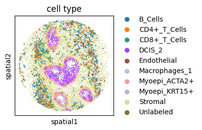
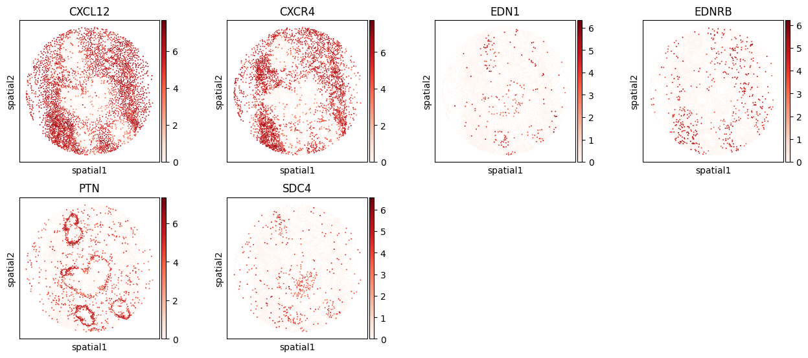

HumanBreastCancer (Xenium) Analysis Tutorial
Data availability: All processed spatial transcriptomics datasets are publicly available on Zenodo: https://doi.org/10.5281/zenodo.17522268
[1]:
from models.SCILD_main import *
from models.help_func import create_LRDatabase_D
import scanpy as sc
import squidpy as sq
import warnings
warnings.filterwarnings('ignore')
np.random.seed(42)
Import data
[ ]:
# data_name = 'DCIS1'
data_name = 'DCIS2'
[3]:
adata = sc.read_h5ad(f'./data/HumanBreastCancerXenium_adata_processed_{data_name}.h5ad')
adata
[3]:
AnnData object with n_obs × n_vars = 4794 × 311
obs: 'cell_id', 'transcript_counts', 'control_probe_counts', 'control_codeword_counts', 'total_counts', 'cell_area', 'nucleus_area', 'region', 'celltype', 'in_roi', 'n_genes'
var: 'gene_ids', 'feature_types', 'genome', 'n_cells'
uns: 'celltype_colors', 'log1p', 'spatialdata_attrs'
obsm: 'spatial'
[4]:
sq.pl.spatial_scatter(adata, shape=None, size=1, color=["celltype"], figsize=(4, 4), title='cell type')
Please specify a valid `library_id` or set it permanently in `adata.uns['spatial']`

Create L-R database
[5]:
LRDatabase_D = create_LRDatabase_D(
adata,
min_cell_pct=0.001,
database='CellChat',
species='human'
)
[6]:
LRDatabase_D
[6]:
| receptor | CXCR4 | EDNRB | SDC4 |
|---|---|---|---|
| ligand | |||
| CXCL12 | 1.0 | 0.0 | 0.0 |
| EDN1 | 0.0 | 1.0 | 0.0 |
| PTN | 0.0 | 0.0 | 1.0 |
Run SCILD
[7]:
CCCProb = SCILD(adata=adata,
LRDatabase_D=LRDatabase_D,
neighbor_k=20,
alpha_q=0.1,
alpha_f=0.1,
alpha_g=0.1,
niter_max=100,
eps=1e-4,
verbose=True,
plot_error=True
)
CCCProb.preparing()
nl = CCCProb.nl
nr = CCCProb.nr
ns = CCCProb.ns
print('The number of ligand is: ' + str(nl))
print('The number of receptor is: ' + str(nr))
print('The number of spot is: ' + str(ns))
*************Preparing*************
neighbor_k: 20
The number of ligand is: 3
The number of receptor is: 3
The number of spot is: 4794
[8]:
mu0 = np.random.random(nl * ns).reshape(-1, 1)
v0 = np.random.random(nr * ns).reshape(-1, 1)
CCCProb.solving_optimization(mu0, v0)
*************Solving*************
The relative error is: 0.05192437992530585
The relative error is: 0.028486725024731874
The relative error is: 0.02025789702458264
The relative error is: 0.01596560021255227
The relative error is: 0.013300769537026701
The relative error is: 0.011476945051522578
The relative error is: 0.010126550089702422
The relative error is: 0.009080509156811996
The relative error is: 0.008242905085682877
The relative error is: 0.007554971082628599
The final relative error is: 0.007554971082628599
The total iteration step is: 100

[9]:
CCCProb.adata
[9]:
AnnData object with n_obs × n_vars = 4794 × 311
obs: 'cell_id', 'transcript_counts', 'control_probe_counts', 'control_codeword_counts', 'total_counts', 'cell_area', 'nucleus_area', 'region', 'celltype', 'in_roi', 'n_genes'
var: 'gene_ids', 'feature_types', 'genome', 'n_cells'
uns: 'celltype_colors', 'log1p', 'spatialdata_attrs'
obsm: 'spatial', 'sum-sender-Q', 'sum-sender-P', 'sum-receiver'
Extract LR CCC
[10]:
CCCProb.query_all_LR()
[11]:
CCCProb.tensor_P.shape
[11]:
(4794, 4794, 3, 3)
[12]:
res_dict = tensor_to_method_result(CCCProb.tensor_P,
list(CCCProb.LRDatabase_D.index),
list(CCCProb.LRDatabase_D.columns))
len(res_dict)
[12]:
9
[13]:
res_dict = filter_method_result_by_LR_database(res_dict, CCCProb.LRDatabase_D)
len(res_dict)
[13]:
3
[14]:
import pickle
with open(f"./results/HumanBreastCancerXenium_{data_name}_SCILD_result.pkl", "wb") as f:
pickle.dump(res_dict, f)
Visualization
select L-Rs to show (spatial)
[15]:
CCC_df = CCCProb.compute_TSSR()
CCC_adata = sc.AnnData(CCC_df)
CCC_adata.obsm['spatial'] = adata.obsm['spatial']
CCC_adata
[15]:
AnnData object with n_obs × n_vars = 4794 × 6
obsm: 'spatial'
[16]:
CCCProb.adata.obs[CCC_df.columns] = CCC_df
CCCProb.adata.obs.head()
[16]:
| cell_id | transcript_counts | control_probe_counts | control_codeword_counts | total_counts | cell_area | nucleus_area | region | celltype | in_roi | n_genes | CXCL12->CXCR4 (S) | CXCL12->CXCR4 (R) | EDN1->EDNRB (S) | EDN1->EDNRB (R) | PTN->SDC4 (S) | PTN->SDC4 (R) | |
|---|---|---|---|---|---|---|---|---|---|---|---|---|---|---|---|---|---|
| 4355 | 4356 | 267 | 0 | 0 | 267 | 232.509531 | 30.345000 | cell_circles | Stromal | True | 82 | 1.926135 | 1.369234e-07 | 7.178474e-47 | 7.769933e-10 | 5.546523e-49 | 8.435185e-08 |
| 4356 | 4357 | 329 | 0 | 0 | 329 | 344.722813 | 71.662969 | cell_circles | Stromal | True | 87 | 2.312519 | 4.810222e-08 | 9.695835e-47 | 4.866745e-08 | 6.791721e-01 | 1.305466e-09 |
| 4357 | 4358 | 101 | 0 | 0 | 102 | 90.131875 | 5.870312 | cell_circles | Stromal | True | 33 | 2.902932 | 1.510811e-07 | 6.337316e-47 | 1.047398e-11 | 8.029149e-48 | 1.195343e-08 |
| 4358 | 4359 | 131 | 0 | 0 | 131 | 77.036563 | 13.005000 | cell_circles | Stromal | True | 48 | 3.503055 | 2.246962e-07 | 8.164045e-47 | 1.017825e-15 | 8.380267e-48 | 9.340701e-08 |
| 4389 | 4390 | 350 | 0 | 0 | 350 | 443.344063 | 30.164375 | cell_circles | Stromal | True | 93 | 3.758691 | 8.074165e-08 | 1.258750e-46 | 3.617075e-02 | 2.644387e-01 | 3.387314e-19 |
[17]:
plt.rcParams['figure.figsize'] = [3, 3]
sc.pl.spatial(CCCProb.adata, spot_size=10, color=CCCProb.adata.obs.columns[-6:], cmap='Reds', img_key=None)

[18]:
plt.rcParams['figure.figsize'] = [3, 3]
sc.pl.spatial(CCCProb.adata, spot_size=10, color=['CXCL12', 'CXCR4', 'EDN1', 'EDNRB', 'PTN', 'SDC4'], cmap='Reds', img_key=None)

[ ]: